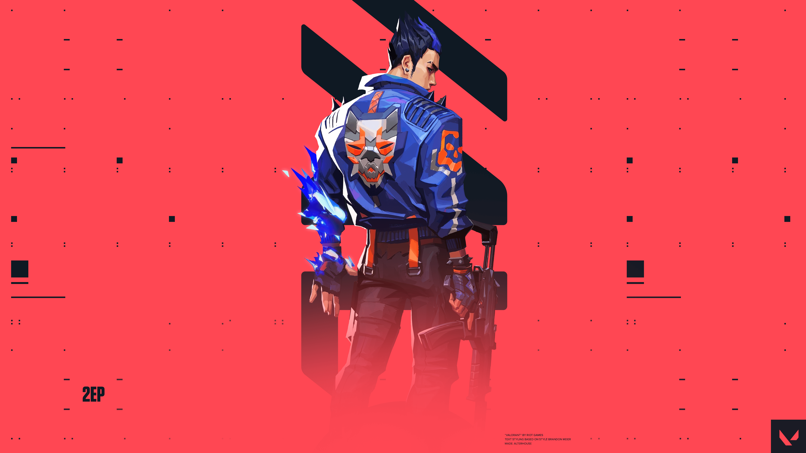

YORU

-
DUELIST --
Japanese native, Yoru, rips holes straight through reality to infiltrate enemy lines unseen. Using deception and aggression in equal measure, he gets the drop on each target before they know where to look.
-
Yoru is a duelist agent who specializes in faking out opponents and moving into unsuspecting positions. He has two abilities that allow him to move to a new location stealthily and another that is designed to make enemies think that he has moved. So keeping track of him is near impossible at times
-
Q - BLINDSIDE
-- EQUIP to rip an unstable dimensional fragment from reality. FIRE to throw the fragment, activating a flash that winds up once it collides with a hard surface in the world
-

E - GATECRASH
-- EQUIP to harness a rift tether FIRE to send the tether out moving forward ALT FIRE to place a tether in place ACTIVATE to teleport to the tether's location
-
C - FAKEOUT
-- EQUIP an echo that mimics footsteps when activated FIRE to activate and send the echo forward ALT FIRE to place an echo in place USE the inactive echo to send it forward
-
X - DIMENSIONAL DRIFT
-- EQUIP a mask that can see between dimensions. FIRE to drift into Yoru's dimension, unable to be affected or seen by enemies from the outside